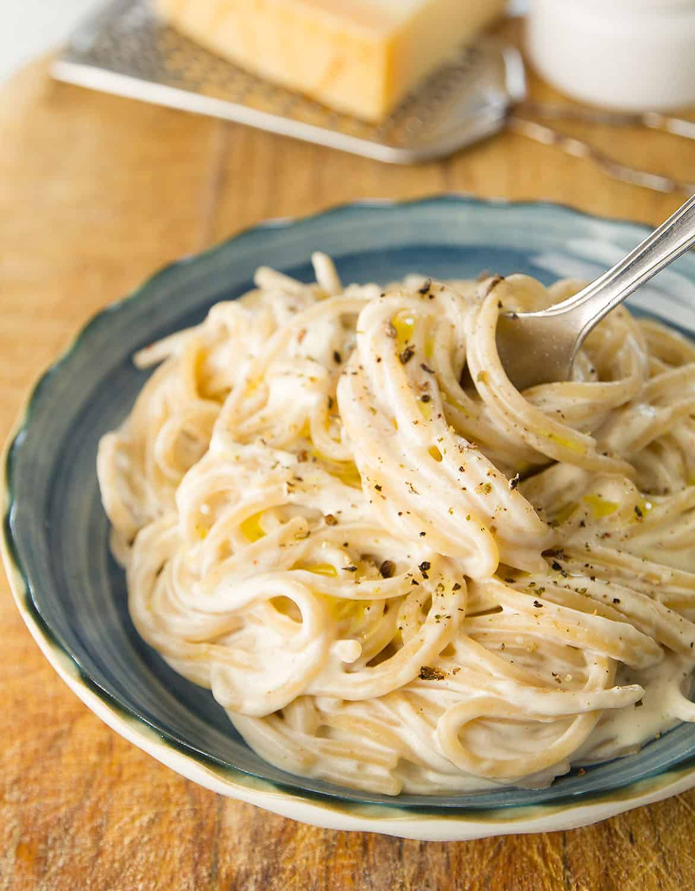

Cream Cheese Pasta

Description
This is a recipe that I like to follow often. It is one of my favorite dishes to eat as it
has an extremely enjoyable mixture of rich and savoury flavors that go so well with pasta
based dishes.
You will need to get a few ingredients together before we start to make the dish.
Ingredients
- 250ML of full fat cream
- 1 chicken stock cube
- 50G of sweet corn
- 50G of a cheese of your choice
- 500G of a pasta of your choice
- 200G of chicken breast
- 10ML of olive oil
Steps
- Fill an appropriately sized pot of salted water and set it to boil.
- Add a dash of olive oil to a pan and put on the pan on heat.
- Dice the chicken breast and once the pan is hot enough set the chicken breast to fry.
- By now the water should be near boiling and the pasta should be added to the pot
- Finally add the cream, chicken stock, and cheese to a pot and put them on heat.
- Once the pasta is boiled, chicken cooked, and the cream mixture has melted together,
Add all of the cooked ingredients along with the sweetcorn to your dish and voila,
you have a meal ready to eat!